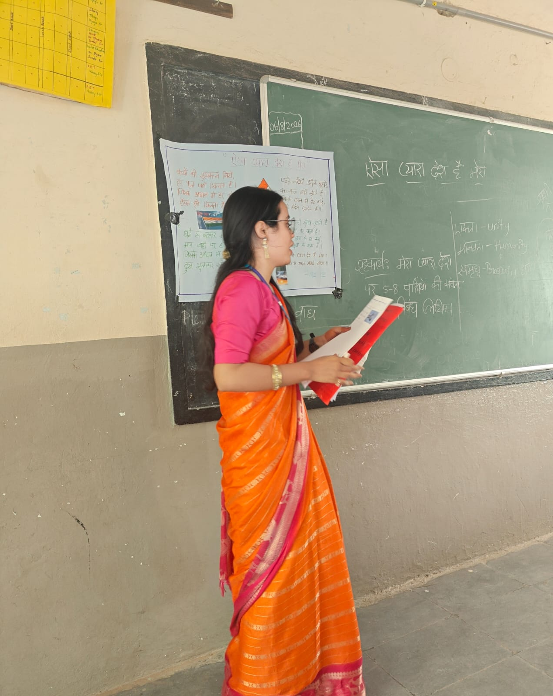
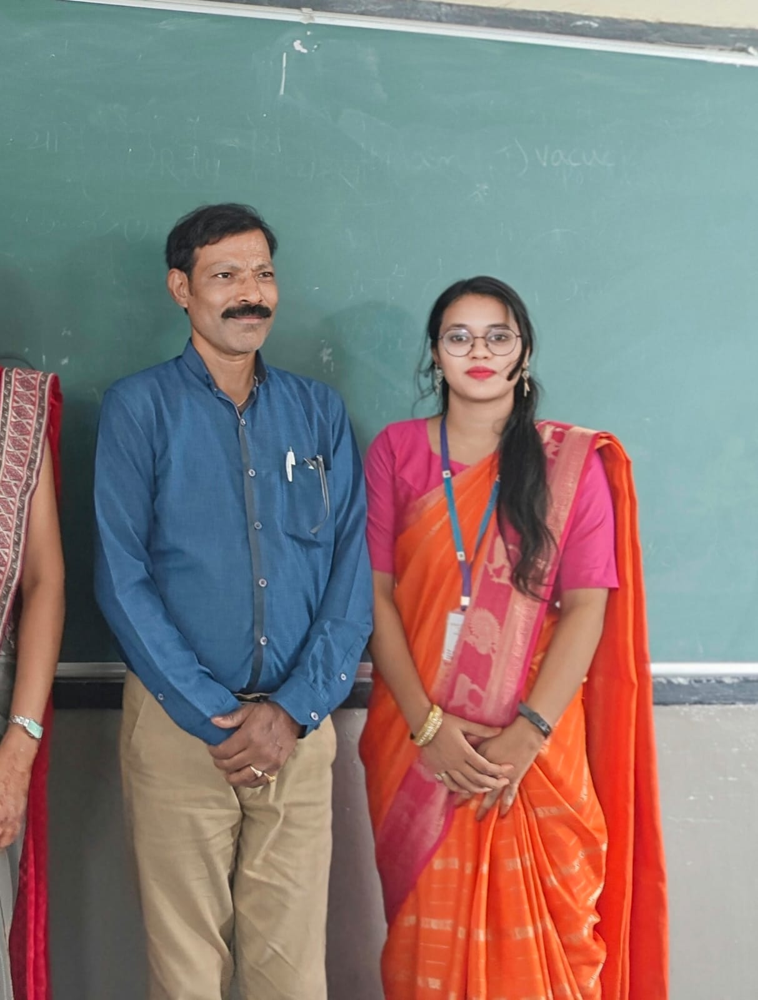
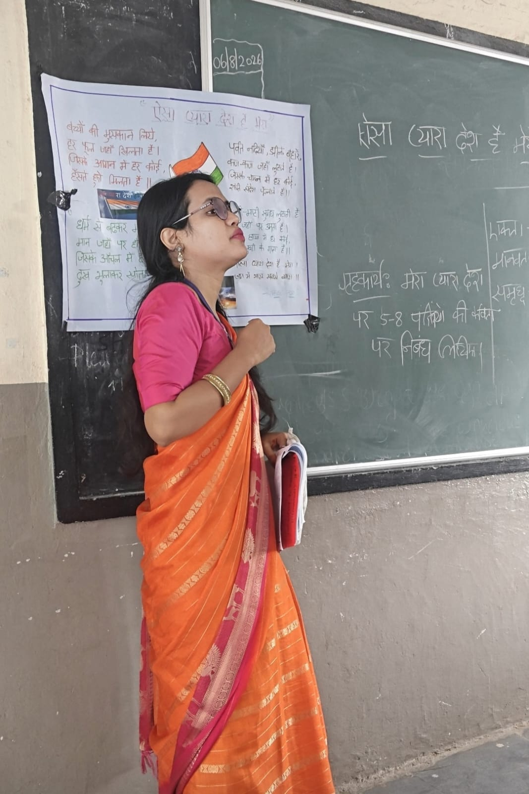
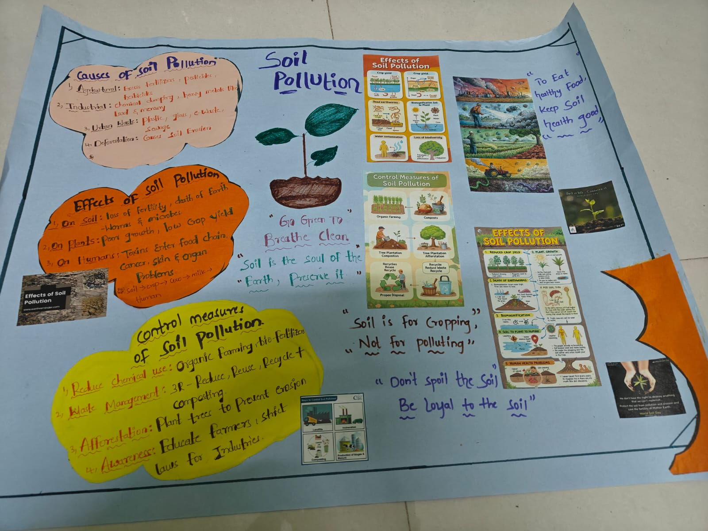
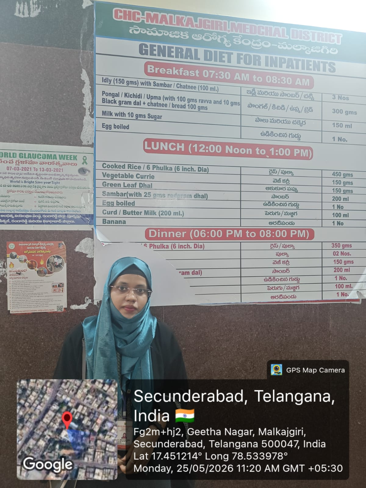
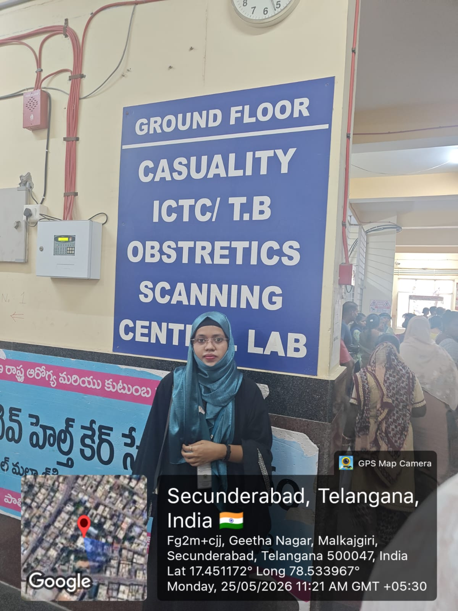
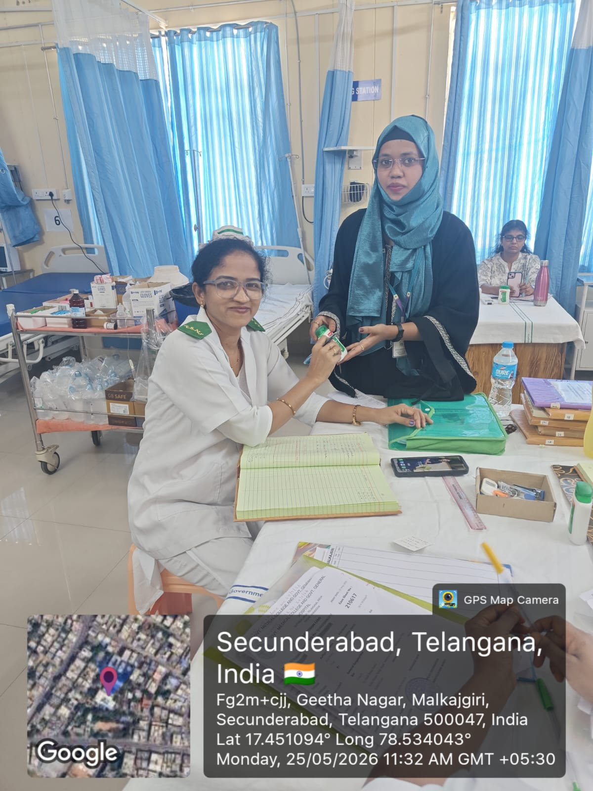
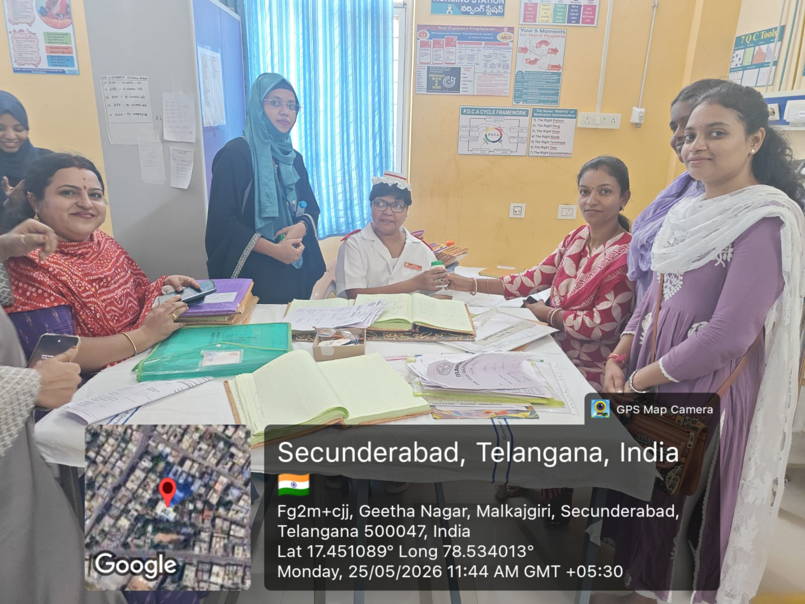
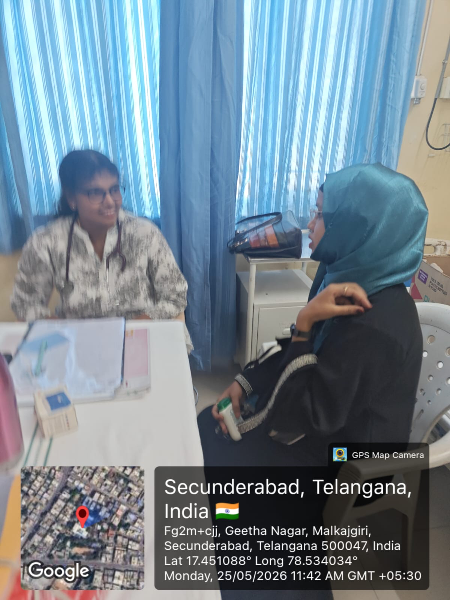
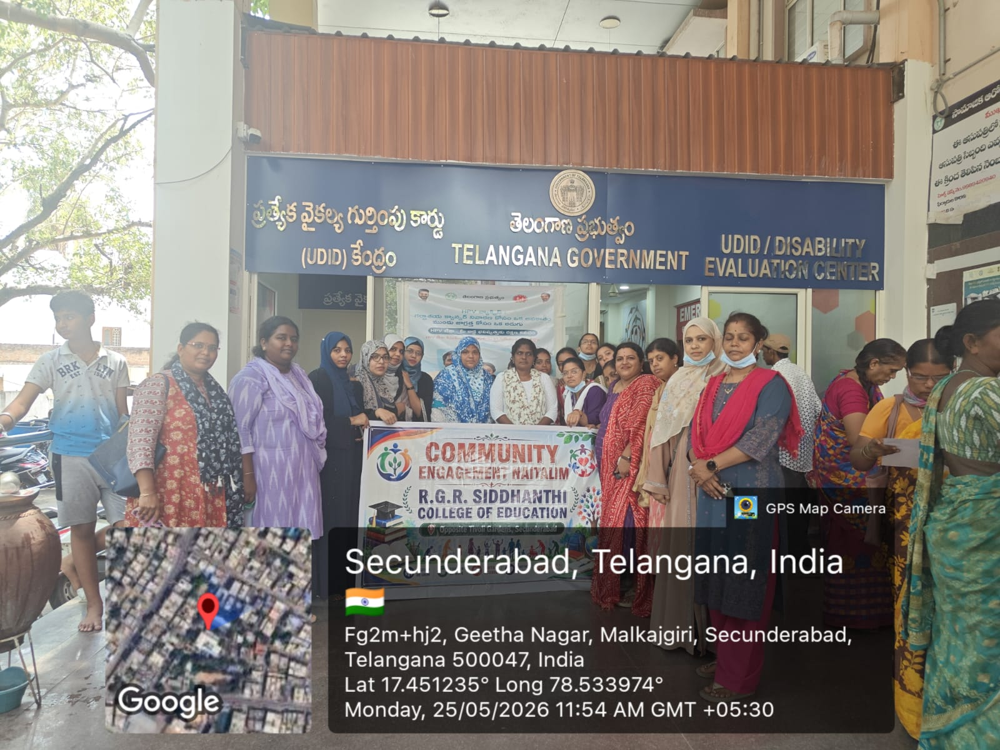

Semester IV
The culminating phase of the B.Ed. programme, bringing together teaching practice, environmental awareness, community engagement, and professional reflection.
Final Practical Examinations
The final practical examination represented an important stage in the B.Ed. programme, providing an opportunity to demonstrate lesson planning, classroom communication, teaching skills, and the effective use of teaching-learning materials.
For my Hindi practical, I taught the poem "Aisa Pyara Desh Hai Mera". I used vocal modulation, interactive chalkboard work, and pre-designed visual aids to make the lesson engaging and meaningful while demonstrating the pedagogical skills developed throughout the programme.




Environmental Education
Environmental education strengthened the connection between classroom learning and responsible citizenship. It encouraged the understanding of environmental problems and the importance of sustainable practices.
I developed a comprehensive visual project on Soil Pollution, presenting its agricultural and industrial causes, effects on ecosystems and human health, and preventive measures including 3R waste management and afforestation.
Public Health & Hospital Visit
As part of our community engagement and health education coursework, our cohort visited the Community Health Centre (CHC) in Malkajgiri. The visit provided exposure to public health administration, inpatient nutritional practices, healthcare facilities, and medical record management.

Inpatient Nutrition Study
Observing general diet schedules and nutritional considerations for hospital patients.

Healthcare Administration
Observing hospital departments and available healthcare facilities.

Medical Record Protocols
Learning about record-keeping procedures through interaction with healthcare staff.

Public Health Outreach
Understanding community welfare and health management practices.

Clinical Observations
Observing patient-care environments and healthcare interactions.

Community Engagement
R.G.R. Siddhanthi College cohort during the community field visit.
Semester IV Reflection
Semester IV brought together the knowledge, skills, and experiences developed throughout my B.Ed. journey. The final practical examination gave me an opportunity to demonstrate my teaching abilities, while environmental education and community-based activities helped me understand the wider responsibilities of a teacher.
The visit to the Community Health Centre also broadened my understanding of how education connects with health, society, and community welfare. These experiences helped me move beyond viewing teaching only as classroom instruction and encouraged me to see the teacher as a facilitator, guide, and responsible member of the community.
Completing the four semesters has strengthened my confidence in lesson planning, communication, classroom interaction, teaching aids, experiential learning, and reflective practice. The B.Ed. journey has therefore been an important step in developing my identity as a student teacher.
The Complete Academic Journey
Four semesters of learning, teaching practice, field experiences, creative work, and reflection have shaped my journey as a student teacher.